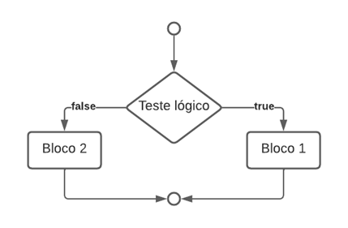
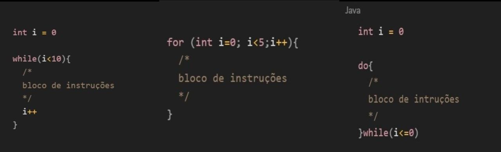
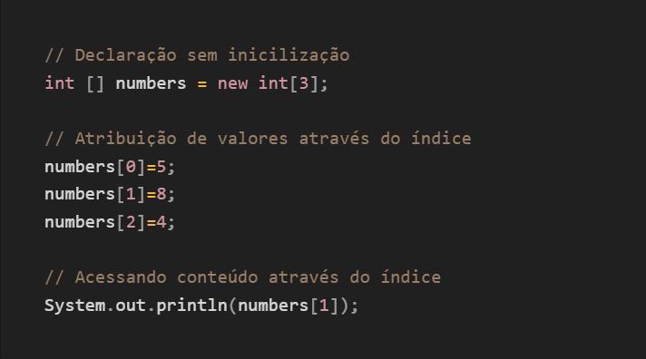
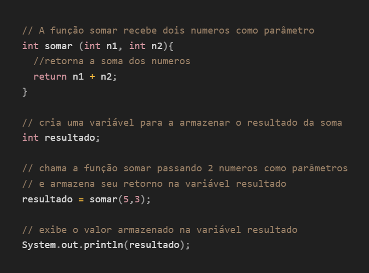

Uma linguagem de programação é um método comum de programação derivado de um conjunto de regras sintáticas e semânticas destinadas a converter o código-fonte em um programa de computador ou ser usado como um texto interpretado.
Regra Semântica é usada para passar entendimentos específicos na comunicação.
Regras Sintáticas ele reconhece expressões e comandos por sequência de símbolos que constituem estruturas sintáticas
Os operadores são fundamentais para manipular dados e realizar tarefas, sendo símbolos ou palavras que fazem operações sobre as variáveis e valores. Abaixo vai estar alguns tipos de operadores
| OPERADOR | TIPOS | FUNÇÕES |
| = | Atribuição | Atribuição |
| + | Aritmético | Adição |
| - | Aritmético | Subtração |
| * | Aritmético | Multiplicação |
| / | Aritmético | Divisão |
| && | Lógico | “E” lógico |
| || | Lógico | “OU” lógico |
| testeLógico ? true : false | Ternário | Realiza teste lógico e executa instrução caso verdadeiro ou falso |
A estrutura de decisão permite o programa executar diferentes blocos de códigos em determinada decisão.
A estrutura “if” é executada caso a condição específica já verdadeira e “else” para caso seja falsa. Já a “if-else” permite multiplicar a condição em sequência.
“Switch” ela simplifica a seleção entre muitas opções dentro de uma variável.
A estrutura de repetição conhecida também como “loop”, permite que o bloco de código seja executado várias vezes.
Se usa o “for” quando se sabe a quantidade de vezes que o loop deve ser repetido. “While” executa quando a condição é verdadeira. “do-while” faz o código ser executado pelo menos uma vez.
Vetores armazenam uma coleção de elementos, cada um pode ser acessado por um índice.
Os blocos de código de funções realizam tarefas específicas, podendo receber parâmetros e retornar valores.
